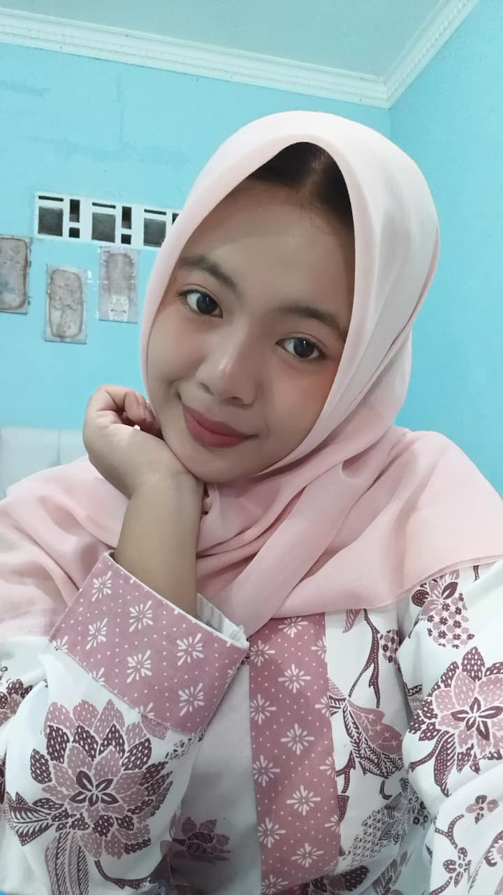
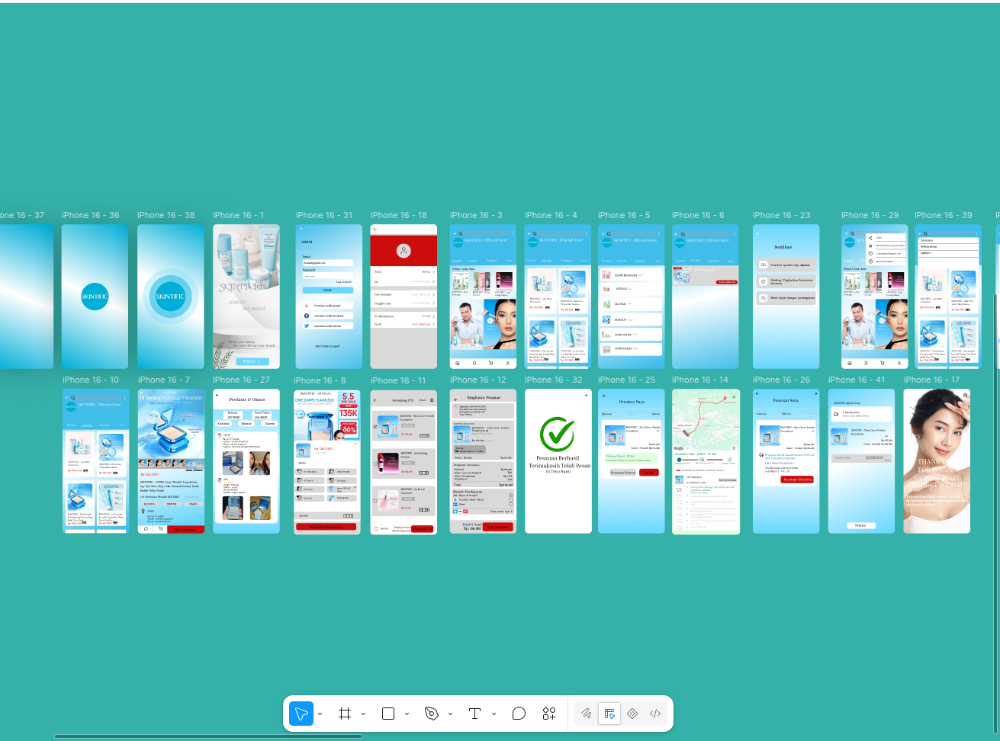
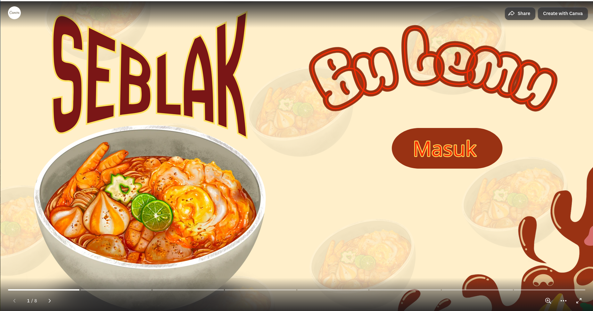
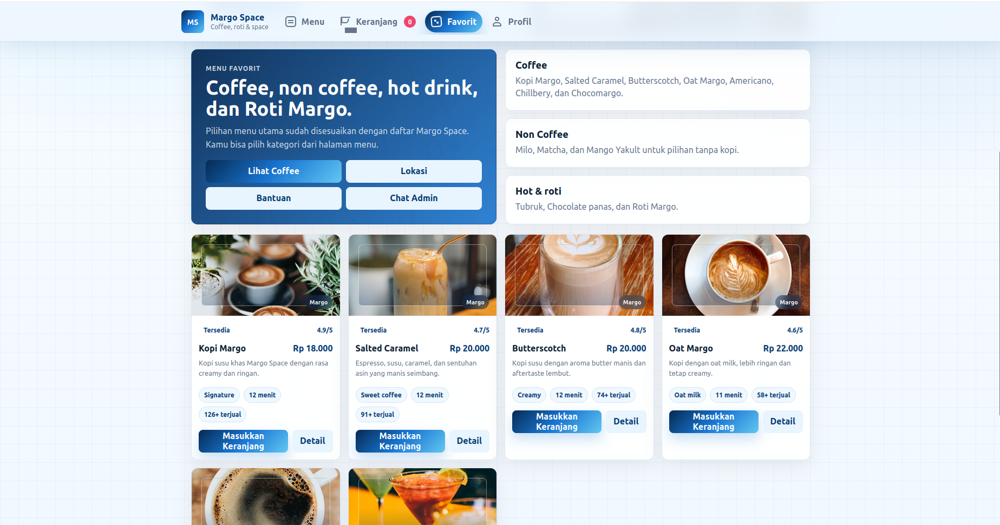

PORTOFOLIO 2026BERDOMISILI DI INDONESIA
HALO, SAYA
Hasna Putri
Realita
Seorang siswa Rekayasa Perangkat Lunak yang membuat pengalaman digital dengan rasa ingin tahu dan perhatian pada detail.

KOLABORASI
01 / TENTANG SAYA
Mengubah rasa ingin tahu
menjadi karya digital.
Saya adalah Hasna Putri Realita, siswa dari SMK Negeri 1 Rembang. Bagi saya, menulis kode bukan hanya soal membuat fitur berjalan—tetapi juga tentang menciptakan pengalaman yang jelas, cepat, dan menyenangkan.
Melalui PKL, saya ingin memahami standar kerja profesional dan mengubah pembelajaran di kelas menjadi kontribusi nyata untuk sebuah tim.
Mari bekerja bersamaHTML5✦CSS3✦JAVASCRIPT✦PHP✦CANVA✦FIGMA✦HTML5✦CSS3✦
02 / KEAHLIAN & ALAT
Terus belajar,
terus berkarya.
Teknologi yang saya pelajari dan gunakan dalam membuat proyek digital.
75%
70%
50%
60%
65%
70%
70%
75%
03 / PROYEK PILIHAN
Karya yang
saya buat.
Tiga proyek pilihan yang merekam proses belajar, eksperimen, dan perkembangan kemampuan saya.

01APLIKASI WEB / 2026
Skintific
Aplikasi manajemen usaha yang membantu pengguna mengelola produk, stok, dan transaksi dengan lebih efisien.

02SITUS WEB / 2026
Seblak Bu Lemu
Situs web pemesanan seblak yang memudahkan pelanggan melihat menu dan melakukan pemesanan secara daring.

03PEMESANAN / 2026
Margo Space
Situs web pemesanan kopi yang memudahkan pelanggan dalam memilih menu dan melakukan pemesanan secara daring.
04 / PENGALAMAN
Pengalaman adalah tempat
pembelajaran menjadi nyata.
Perjalanan belajar yang membentuk kemampuan saya dalam merancang dan membangun website.
TAHAP 01
Mempelajari dasar pengembangan web
Mempelajari dasar-dasar HTML dan CSS sebagai fondasi untuk membuat struktur serta tampilan halaman web.
HTML · CSSTAHAP 02
Membuat portofolio dan belajar Figma
Membuat situs web portofolio pribadi serta mempelajari Figma untuk merancang tampilan antarmuka yang lebih terarah.
HTML · CSS · FigmaTAHAP 03
Mempelajari PHP dan Bootstrap
Mempelajari PHP dan Bootstrap, kemudian membuat desain web serta menerapkannya menjadi halaman situs web yang responsif.
PHP · Bootstrap · FigmaTAHAP 04
Membuat sistem pemesanan berbasis web
Membangun situs web sistem pemesanan yang memudahkan pengguna melihat pilihan dan melakukan pemesanan secara daring.
PHP · Bootstrap · MySQL05 / KONTAK
Mari membuat
sesuatu yang baik.
Terbuka untuk peluang belajar, diskusi teknologi, atau kolaborasi proyek.